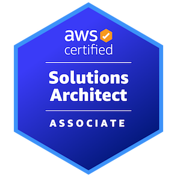
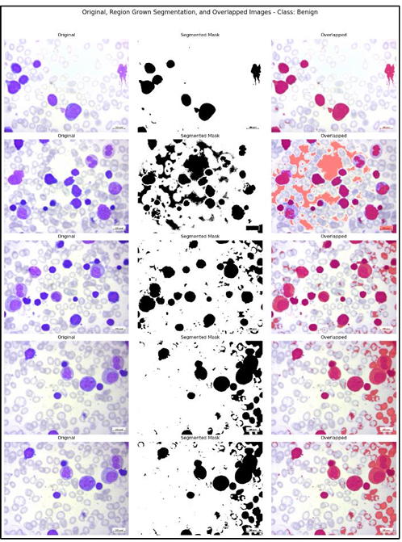

Cloud Infrastructure Automation
Provisioned secure AWS environments using Terraform modules, networking components, IAM roles, and scalable architecture patterns.
Ask for detailsCloud & DevOps Engineer with 6+ years of IT experience, including strong hands-on work in AWS, Azure, Terraform, Kubernetes, CI/CD automation, monitoring, and production support.
I’m a passionate and results-driven Cloud & DevOps Engineer with solid experience in AWS and Azure cloud environments, infrastructure automation, release engineering, Kubernetes orchestration, and operational support.
I enjoy designing scalable, secure, and highly available systems that improve deployment speed, reduce manual effort, and strengthen reliability across enterprise platforms.
My focus areas include Infrastructure as Code, CI/CD pipelines, cloud networking, containerization, monitoring, and automating repeatable operational tasks using scripting and DevOps best practices.
 SQL Database Administrator — Wipro
SQL Database Administrator — Wipro
Provisioned secure AWS environments using Terraform modules, networking components, IAM roles, and scalable architecture patterns.
Ask for detailsImplemented deployment pipelines for containerized workloads using Jenkins, Docker, Helm, and Kubernetes to improve release speed and consistency.
Ask for detailsBuilt operational dashboards and alerting flows with Prometheus, Grafana, and CloudWatch for better system visibility and faster troubleshooting.
Ask for detailsYou can replace these with your real GitHub, live demo, or case study links.
Show reusable infrastructure modules, cloud provisioning code, variables, outputs, and environment structure here.
View RepositoryAdd Jenkinsfile, deployment YAMLs, Helm charts, and automation scripts to demonstrate delivery pipeline knowledge.
View RepositoryUse this card to link your practice labs, Docker work, Kubernetes manifests, and cloud learning projects.
Open GitHub ProfileReplace these with your real repository links later.

AWS Certified Solutions Architect – AssociateCloud architecture and foundational design on AWS.
 Microsoft Certified: Azure Security, Compliance, and Identity Fundamentals
Microsoft Certified: Azure Security, Compliance, and Identity Fundamentals
Understanding of Azure security and governance concepts.
 Microsoft Certified: Azure Data Fundamentals
Microsoft Certified: Azure Data Fundamentals
Foundational data concepts and Azure data services exposure.
 Microsoft Certified: Azure Fundamentals
Microsoft Certified: Azure Fundamentals
Core Azure services, pricing, support, and cloud concepts.
 Microsoft Certified: Power BI Data Analyst Associate
Microsoft Certified: Power BI Data Analyst Associate
Data modelling, reporting, and analytics fundamentals.
 Microsoft Certified: Associate Fabric Analytics Engineer Associate
Microsoft Certified: Associate Fabric Analytics Engineer Associate
Data modelling, Data Transformation, Data Pipelines, Data Lake and Python.


Developed an AI-based diagnostic system to detect Acute Lymphoblastic Leukemia (ALL) using a Vision Transformer (ViT) model enhanced with Entropy Filtering and Region-Growing Segmentation to improve blood smear image clarity and diagnostic accuracy.
The primary objective of this research project was to improve the accuracy of leukemia detection from blood smear images by combining advanced image preprocessing techniques with the Vision Transformer architecture. Traditional approaches often struggle with noisy microscopic images, inconsistent staining, and limited feature clarity. This project addressed those challenges by enhancing the cellular regions before feeding images into the deep learning pipeline.
The project followed a structured machine learning workflow starting from data collection and exploratory data analysis, followed by preprocessing, augmentation, model development, evaluation, and performance comparison. Blood smear images were first analyzed to identify relevant visual patterns and class distribution. Preprocessing was then applied to improve the quality of cell boundaries and reduce unwanted background noise.
The preprocessing pipeline played a key role in boosting model performance. Region-growing segmentation helped isolate critical blood cell regions, while entropy filtering improved contrast and emphasized informative structures inside the microscopic images. These steps helped the model focus on biologically relevant features rather than noise or background artifacts.
The final results showed that the proposed preprocessing-enhanced Vision Transformer significantly outperformed both the conventional CNN baseline and the raw ViT model. This demonstrates that combining image enhancement techniques with transformer-based learning can provide a highly effective solution for medical image classification.
This project demonstrates how AI can support medical diagnostics by improving consistency, reducing manual dependency, and enabling early-stage leukemia detection through image-based analysis. It also reflects strong practical skills in deep learning, medical image preprocessing, experimental comparison, and analytical reporting within a real academic research setting.
Bengaluru, Karnataka, India